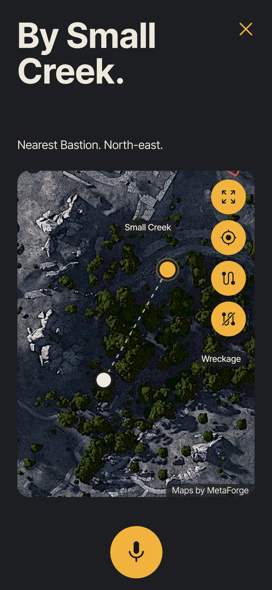
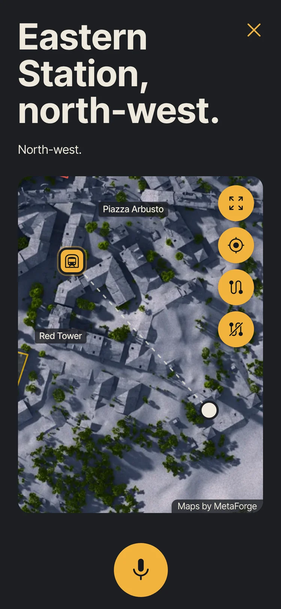
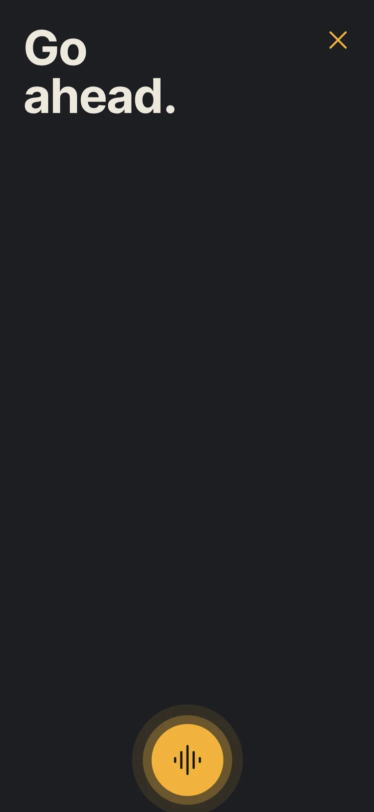
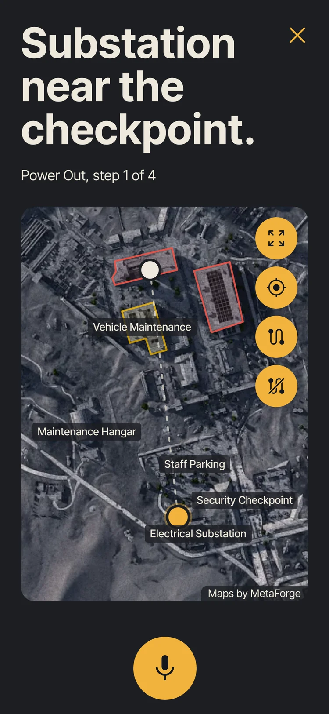

Find what you’re looking for
Say where you are and what you’re after: an enemy, a raider cache, a patch of moss. Relay names the nearest, says which way to go and how far, and puts one dot on the map. No filters, no scrolling.

Need to get out quick?
Under fire and getting lost? Ask for the nearest exit. One line, one direction, your eyes never leave the fight.

Easy conversation
Say “Hey Relay” and talk like you would to a teammate. Relay answers out loud, then listens for a follow-up, so your eyes stay on the game.

Get help on quests
Tell it the quest. Relay keeps track of your step and points you to the next spot. It’s still in testing, so tell us when it gets one wrong.
